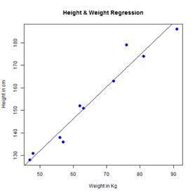

Regression analysis is a very widely used statistical tool to establish a relationship model between two variables. One of these variable is called predictor variable whose value is gathered through experiments. The other variable is called response variable whose value is derived from the predictor variable.
In Linear Regression these two variables are related through an equation, where exponent (power) of both these variables is 1. Mathematically a linear relationship represents a straight line when plotted as a graph. A non-linear relationship where the exponent of any variable is not equal to 1 creates a curve.
The general mathematical equation for a linear regression is –
y = ax + b
Following is the description of the parameters used −
1. y is the response variable.
2. x is the predictor variable.
3. a and b are constants which are called the coefficients.
Steps to Establish a Regression
A simple example of regression is predicting weight of a person when his height is known. To do this we need to have the relationship between height and weight of a person.
-The steps to create the relationship is –
1. Carry out the experiment of gathering a sample of observed values of height and corresponding weight.
2. Create a relationship model using the lm() functions in R.
3. Find the coefficients from the model created and create the mathematical equation using these
4. Get a summary of the relationship model to know the average error in prediction. Also called residuals.
5. To predict the weight of new persons, use the predict() function in R.
Input Data
Below is the sample data representing the observations –
# Values of height
151, 174, 138, 186, 128, 136, 179, 163, 152, 131
# Values of weight.
63, 81, 56, 91, 47, 57, 76, 72, 62, 48
lm() Function
This function creates the relationship model between the predictor and the response variable.
Syntax
The basic syntax for lm() function in linear regression is –
lm(formula,data)
Following is the description of the parameters used −
1. formula is a symbol presenting the relation between x and y.
2. data is the vector on which the formula will be applied.
Create Relationship Model & get the Coefficients
x <- c(151, 174, 138, 186, 128, 136, 179, 163, 152, 131)
y <- c(63, 81, 56, 91, 47, 57, 76, 72, 62, 48)
# Apply the lm() function.
relation <- lm(y~x)
print(relation)
When we execute the above code, it produces the following result −
Call:
lm(formula = y ~ x)
Coefficients:
(Intercept) x
-38.4551 0.6746
Get the Summary of the Relationship
x <- c(151, 174, 138, 186, 128, 136, 179, 163, 152, 131)
y <- c(63, 81, 56, 91, 47, 57, 76, 72, 62, 48)
# Apply the lm() function.
relation <- lm(y~x)
print(summary(relation))
When we execute the above code, it produces the following result −
Call:
lm(formula = y ~ x)
Residuals:
Min 1Q Median 3Q Max
-6.3002 -1.6629 0.0412 1.8944 3.9775
Coefficients:
Estimate Std. Error t value Pr(>|t|)
(Intercept) -38.45509 8.04901 -4.778 0.00139 **
x 0.67461 0.05191 12.997 1.16e-06 ***
---
Signif. codes: 0 ‘***’ 0.001 ‘**’ 0.01 ‘*’ 0.05 ‘.’ 0.1 ‘ ’ 1
Residual standard error: 3.253 on 8 degrees of freedom
Multiple R-squared: 0.9548, Adjusted R-squared: 0.9491
F-statistic: 168.9 on 1 and 8 DF, p-value: 1.164e-06
predict() Function
The basic syntax for predict() in linear regression is –
predict(object, newdata)
Following is the description of the parameters used −
1. object is the formula which is already created using the lm() function.
2. newdata is the vector containing the new value for predictor variable.
Predict the weight of new persons
# The predictor vector.
x <- c(151, 174, 138, 186, 128, 136, 179, 163, 152, 131)
# The resposne vector.
y <- c(63, 81, 56, 91, 47, 57, 76, 72, 62, 48)
# Apply the lm() function.
relation <- lm(y~x)
# Find weight of a person with height 170.
a <- data.frame(x = 170)
result <- predict(relation,a)
print(result)
When we execute the above code, it produces the following result −
1
76.22869
Visualize the Regression Graphically
# Create the predictor and response variable.
x <- c(151, 174, 138, 186, 128, 136, 179, 163, 152, 131)
y <- c(63, 81, 56, 91, 47, 57, 76, 72, 62, 48)
relation <- lm(y~x)
# Give the chart file a name.
png(file = "linearregression.png")
# Plot the chart.
plot(y,x,col = "blue",main = "Height & Weight Regression",
abline(lm(x~y)),cex = 1.3,pch = 16,xlab = "Weight in Kg",ylab = "Height in cm")
# Save the file.
dev.off()
When we execute the above code, it produces the following result −
